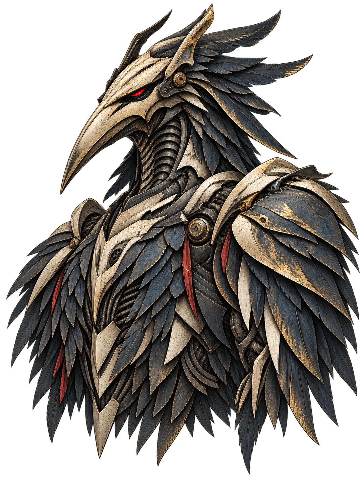

Files
96Rust, TypeScript, Python, Markdown…
 TENGU
TENGUChaos Substrate: index a repository once, then answer feature questions from the index.
search → open files → answer → forgotten

Tree-sitter parses the code, Chaos builds links and groups, vectors live in Postgres + pgvector.
Rust, TypeScript, Python, Markdown…
functions, types, sections
calls and imports
groups of linked units
per unit, in Postgres
Files are read once: Rust, TypeScript, JavaScript, Python, Solidity, GraphQL, Markdown.
Measured 27.10.2026: chaos 1.1.0 on public branch v2 @ 24c82ad8e23c1446e5d840df13c59834bd91d7e2, Apple M4, Ollama embeddinggemma. First index: 241.51 s.
Each level’s hash is computed from the hashes below it.
Each unit gets a hash of its text. Same text, same hash.
Chaos uses SHA-256, chaos-kb uses BLAKE3. Merkle tree: Ralph Merkle, 1979 (US patent 4,309,569). Git stores its history on the same principle.
chaos add compares file hashes and redoes only the difference.
src/domain/budget.rs, inside pack(): + one comment line
One line changed inside one function.
Full rebuild (reindex --force): 0 of 1,690 units embedded again, 20.64 s. Without --force, reindex is skipped on Git: same commit and a clean worktree, 0.02 s.
chaos feature "how are embeddings reused on reindex"
src/adapters/postgres/index.rs:419–452Postgres::save_embeddingssrc/adapters/postgres/index.rs:188–227Postgres::replace_reposrc/adapters/postgres/index.rs:235–339Postgres::merge_filessrc/ports/index_store.rs:18–68IndexStoresrc/adapters/postgres/index.rs:396–417Postgres::chunks_missing_embeddings11 excerpts · 6,000 tokens · 0.20 s · page saved
The question becomes a vector once and is compared with the feature summaries.
Real output, 27.10.2026: 5 of the 11 excerpts. Second run: page_cached = true, 0.16 s.
chaos feature --all-repos: answered in each repository, linked by names found word for word.
4 × 1,500 = 6,000 tokens · one page
The same question goes to each repository — each answers from its own index.
Illustration: the names are invented, the linking rule is real. Measured on a private four-repository project at the default budget: 5,803 tokens, 13 excerpts, 7 links.
chaos-kb check — the personal knowledge base from episode 04.
The stand mixer bowl holds 4.8 litres.same words → hash → found among the leavesEXACTKitchen.md:10 · no embedding · 0.04 s
When did the car last get an oil change?other words → vector → nearest paragraphSIMILAR 0.56 ≥ 0.38Car.md:5–6 · 0.18 s
The dog is due for its rabies vaccination in June.nothing close enoughABSENT 0.20 < 0.38new fact → remember · 0.15 s
4caab1c3169871f100d6e6f27a5263978a555413009644be398e192c192b9027fcb9adaf4dce19bc5284aaa8cb0fe79066a3f7ff8f2057a9d419265b7ed260bc4caab1c3169871f100d6e6f27a5263978a555413009644be398e192c192b9027A paragraph’s exact words: a hash and a lookup among the leaves. No model needed.
Demo vault of three invented notes, chaos-kb 2.0.0, 27.10.2026. “Exact” means a whole stored paragraph, ignoring case, spacing and punctuation. The 0.38 threshold was calibrated on test questions.
Routing by meaning can miss, and links between repositories need exact names.



EPISODE 05 / MEASURED 27.10.2026 / chaos 1.1.0 · 3c69fa12b485ee72250f9516d3c4bcb097c20f92